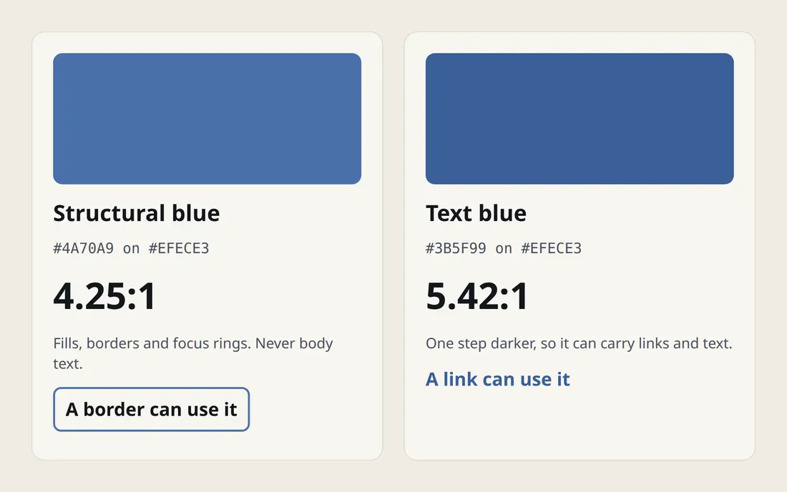

My portfolio's CSS declares two blues that look almost the same. They exist because of one measurement: contrast against the cream page background.
| Token | Colour | Contrast on cream | Use |
|---|---|---|---|
| denim-brand | #4A70A9 | 4.25:1 | Large type, fills, borders and focus rings. Never body text. |
| denim | #3B5F99 | 5.42:1 | Links and small text. |
| soft-blue | #8FABD4 | 1.99:1 | Fills only, behind dark text. |
| clay | #9C4526 | 5.40:1 | Labels and evidence. |
| ink | #13161C | 15.34:1 | Body text. |
| border-ui | #827D70 | 3.47:1 | Outlines of buttons and inputs. |

The rule behind the table
Normal text needs 4.5:1. Large text, borders and focus rings need 3:1. The brand blue clears 3:1 but not 4.5:1, so it cannot colour a paragraph link. Darkening it by one step gives a blue that passes 4.5:1 and still reads as the same colour.
Control boundaries get their own token, because a button's outline has to reach 3:1 too. Decorative hairlines are exempt. They carry no information, so they stay light.
The dark theme
My portfolio also has a dark theme. It remaps the same token names to new values and leaves the brand blue unchanged. The link blue becomes the soft blue, which measures 7.79:1 on the dark background. This blog is light only.
Checking, not guessing
I did not trust the ratios in my own CSS comments. Before publishing this page I recomputed them from the hex values, and they match what the stylesheet says.
Shipping in passes
I finished the site in numbered passes, each behind a scripted check and a status sweep, so the page structure my classmates had tested did not change underneath me.